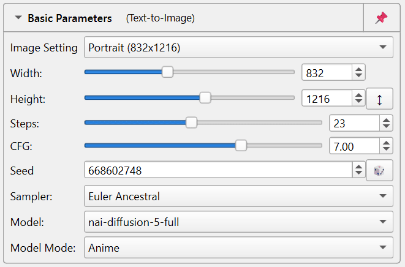
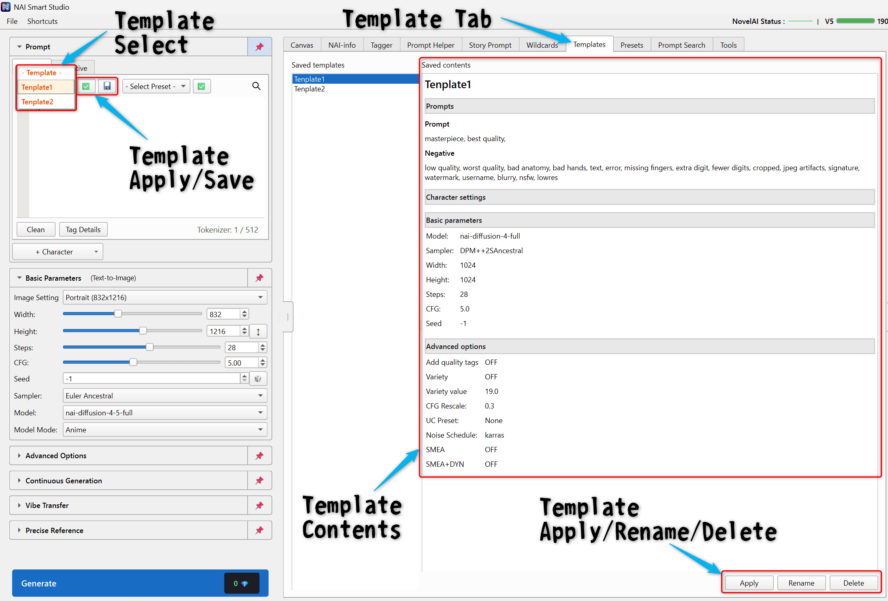

Introduction
NAI Smart Studio is a desktop tool designed to make NovelAI image generation easier to use. It focuses on Text-to-Image, Image-to-Image, and Inpaint, with many additional tools for prompts, references, search, and image history.
Screen Layout
The interface is divided into three main areas.
- Left panel: Prompt / Negative, character prompts, generation settings, continuous generation, Vibe Transfer, and Precise Reference.
- Center panel: The Canvas plus tabs for input assistance, search, metadata review, and other helper features.
- Right panel: Image history. Normal click loads the image into the canvas, Shift+click opens the import dialog, and right-click opens file actions.

Layout example.
Initial Setup
On first launch, start by registering your NovelAI API key. If no API key is set, the app will guide you to the settings screen.

How to get your API key
- Log in to the NovelAI website.
- Open your account settings from the top-right menu.
- Copy your permanent API token.

Settings worth reviewing
After adding your API key, reviewing these items can make setup smoother.
- API key management: Register and switch between multiple accounts.
- Output folder: Choose where generated files are saved.
- Wildcard folder: Set the folder used by Wildcards.
- UI language: Switch between English, Japanese, Chinese, Korean, and other supported languages.

Basic Generation
Set your Prompt and generation options in the left panel, then press Generate. Use Ctrl + Enter for normal generation, or Ctrl + Alt + Enter when you want to run a single job.

Prompt / Negative
- Prompt: Describe what you want to create.
- Negative: Describe what you want to avoid.
- Tag Detail: Useful for reviewing tag information. Token count is also shown under the prompt box.
Character prompts
Use “Add Character” when you want to separate prompts for multiple characters. This is helpful for scenes with more than one person.
Basic parameters
Image Setting, width and height, Steps, CFG, Seed, Sampler, and Model are grouped in the left panel. Your commonly used settings are kept for the next launch.

Use Image Setting to choose common square, portrait, and landscape sizes.
- Image Setting: Choose frequently used image sizes. If you edit width or height directly, the selection becomes Custom.
- Width / Height: Values are set in 64px steps. On generation, the app checks that the long side is at most 2048px and the short side is at most 1536px.
- Model: You can choose NovelAI Diffusion V3 / V4 / V4.5 family models.
- Sampler: Choose the sampling method used during generation. It can affect style, stability, and speed.
- Seed:
-1means random. A fixed number makes a setup easier to reuse.
Quality Tags, CFG Rescale, and related controls are grouped under Advanced options in the left panel.
Estimated cost
The Generate button shows an estimated Anlas cost based on the current settings, and it updates automatically when you change model, size, or Steps.
Importing Images
You can import images by drag and drop, Ctrl + O, Shift+clicking an image in history, or using the “Import” entry in the image context menu.

Importing a single image
A single image can be sent to several destinations.
- Image-to-Image / Inpaint: Load it into the canvas.
- Vibe Transfer: Add it to a vibe slot.
- Precise Reference: Add it to a reference slot.
- Tagger: Send it directly to the Tagger tab.
- NAI-info: Inspect generation information embedded in the image.
- Import metadata: Reapply Prompt, Negative, character data, settings, Seed, potion data, and more to the current screen.
Importing multiple images
When you drop multiple files at once, you can send them in bulk to Vibe Transfer or Precise Reference.
When metadata import is useful
If you want to reproduce or reuse an older result, Shift+click an image from history and import only the fields you need.
Image-to-Image / Inpaint
Use this mode when you want to change an existing image or redraw only a selected area. Once an image is loaded into the canvas, the relevant controls become available.

Basic flow
- Load an image into the canvas.
- Generate without a mask to run Image-to-Image.
- Generate with a mask to run Inpaint.
Mask tools
- Brush: Draw freehand.
- Rectangle: Mask a rectangular region.
- Polyline: Mask a polygonal area.
- Paint: Paint directly on the image. Right-click can pick a color from the canvas.
- Cutout: Select an area, then move, scale, and rotate it before applying.
- Canvas resize: Expand or shrink the canvas in 64px steps.
- Transform: Move, scale, or rotate the loaded image before confirming the edit.
- Right-drag: Erase the mask while drawing masks.
Planned file: images/I2I_EDIT_TOOLS_001_EN.png
Show the current i2i / Inpaint paint, cutout, canvas resize, and transform tools.
Common controls
- Strength: How far the result moves away from the source image. The app uses the i2i or Inpaint value depending on whether a mask exists.
- Brush Size: The size of the mask brush.
Undo / Redo
Use Ctrl + Z / Ctrl + Y for mask undo/redo, and ← / → for canvas image undo/redo.
Simple Upscale
This mode upscales an image currently loaded in the canvas. Once an image is loaded, a button appears below the canvas to switch into Simple Upscale mode.

How to use it
- Load the source image into the canvas.
- Click the Simple Upscale mode button.
- Choose the upscaler, scale, and strength.
- Check Opus status, output size, and the tile plan, then run it.
Things to know
- This feature is intended for Opus accounts.
- You can choose RealESRGAN, RealESRGANv2, Waifu2x, and other available upscalers.
- If stream preview is enabled, you can watch progress while it runs.
- Large images are split into tiles automatically and can take longer to process.
- The result is saved to
output/YYYY-MM-DD/.
nai_sd_upscale_.
Continuous Generation
Continuous generation lets you run repeated jobs based on a count or time limit. It is also useful when processing queues created from Prompt Search.

Generation modes
- One-time: Run only once.
- Count: Stop after the specified number of images.
- Time: Continue until the selected time expires.
- Until stopped: Keep going until you stop it manually.
Helper options
- Delay: Wait time between jobs.
- Random delay: Vary the delay slightly each run.
- Error behavior: Stop immediately or wait and retry later.
Vibe Transfer
Vibe Transfer extracts visual mood and style from reference images and applies that influence to generation. You can mix multiple slots together.

How to use it
- Open the “Vibe Transfer” section in the left panel.
- Add images or vibe files using the plus button.
- Adjust reference strength and information extracted.
- Run generation. If a slot is not encoded yet, the app will encode it automatically first.
What you can do
- Multiple slots: Turn each slot on or off independently.
-
Save and load: Use
.naiv4vibeand.naiv4vibeBundlefiles. - Embed into images: Export an image with bundle data included.
Precise Reference
Use Precise Reference when you want character design or visual style to stay closer to a reference image. You can add multiple reference images and tune how strongly they affect the result.

How to use it
- Open “Precise Reference” in the left panel.
- Add one or more reference images.
- Choose whether to reference character, style, or both.
- Adjust strength and fidelity, then generate.
Notes
- You can compare multiple references side by side.
- Background preview can be toggled in settings.
- This feature is intended for NAI V4.5 compatible models.
NAI-info
NAI-info shows NovelAI generation information embedded in image files. Use it when you want to review Prompt, Negative, Seed, Steps, Sampler, reference data, and other settings from older images.
How to use it
- Open the NAI-info tab in the center panel.
- Drop the image you want to inspect.
- Review summary, Prompt, character prompts, Negative, and raw metadata.
- Use Send to text2img or Send to img2img when you want to reuse the metadata.
Planned file: images/NAI_INFO_001_EN.png
Show the NAI-info tab with preview and generation information.
Tagger
Tagger analyzes an image and suggests prompt tags. Additional setup is required before use.
How to use it
- Send an image to the Tagger tab from the import dialog or by opening the tab directly.
- Choose the Tagger model and adjust general, character, and copyright/IP thresholds.
- Run tag inference.
- Review the tag list and select only the tags you want.
- Add selected tags, or all visible tags, to your prompt.
What you can do
- Score review: Check confidence scores before adding tags.
- Japanese aliases: Supported tags can also display Japanese aliases.
- Wiki lookup: Open the Danbooru wiki with the
?button. - Prompt Helper integration: Review categories and related information while choosing tags.
- Folder batch mode: Run inference for multiple images and write caption text files.

Tagger tab screen.
Prompt Helper
Prompt Helper lets you search tags or browse them by category, then add them to Prompt or Negative. It is useful when you cannot remember a tag name or want to find related tags.
Basic use
- Search: Find tags by English name, Japanese alias, or description.
- Categories: Browse groups such as body, clothing, expressions, and more.
- Favorites: Save frequently used tags.
- Custom tags: Add your own tags and categories.
- Related items: Follow related tags found in the master data.
Adding to prompts
Select a tag and press “Add to current tab” to insert it into the currently visible Prompt or Negative tab. You can also double-click a tag to insert it.
Planned file: images/PROMPT_HELPER_001_EN.png
Show Prompt Helper search, categories, tag list, and detail area.
Wildcards
Wildcards insert random elements from prepared lists. They are especially useful for generating variations in hair color, clothing, poses, or backgrounds.

Basic syntax
{A|B|C}: Randomly choose one item from the list.__name__: Pick one item from a wildcard file.__folder/name__: Include a folder path in the wildcard name.__file/key__: Target a specific YAML key.[SEQ:__name__]: Use entries in order for continuous generation.
How to use it
- Prepare TXT or YAML files inside your wildcard folder.
- Open the Wildcards tab to browse them and copy the syntax you need.
- Paste the wildcard expression into your prompt and generate.
Notes
- TXT files use one candidate per line. Empty lines and
#comments are ignored. - YAML files are useful when you want to group entries by key.
CHAR:lines are extracted into character prompts after wildcard expansion.- Edit wildcard files with your preferred text editor.
Templates
Templates save your current Prompt, Negative, character prompts, and generation settings together so you can apply them later in one step. Use them from the “- Template -” selector above Prompt.

Saved contents
- Prompts: Prompt, Negative, character Prompt / Negative, and character positions.
- Basic Parameters: Image Setting, width, height, Steps, CFG, Seed, Sampler, and Model.
- Advanced options: Quality Tags, Variety, CFG Rescale, UC preset, Noise Schedule, and V3-only options.
How to use it
- Set up the prompts and generation settings you want to reuse.
- Use the save icon to store them with a template name.
- Select a template and press the check button to apply it.
- Use the trash button to delete templates you no longer need.
Presets
Presets are prompt helpers for saving reusable prefix / suffix tags, Negative additions, exclusion rules, and cleanup rules. You can access them from the Presets tab and from the preset selector in Prompt.

Main features
- Prefix / suffix tags: Add commonly used tags to the beginning or end of the prompt.
- Common negative prompt: Keep recurring Negative tags in one place.
- Auto exclusion: Remove unwanted words automatically.
- Formatting: Clean duplicates and spacing.
- Save and switch: Keep multiple presets for different workflows.
Prompt Search
Prompt Search lets you search the prompt database and send matching results directly into the generation queue.
Setup
The first use requires downloading and preparing the search data. You can open the setup wizard from the Tools tab or from Settings → Search.

Once setup is complete and Prompt Search is enabled, the Prompt Search tab appears in the center panel. Tagger becomes available as well.
Search flow

- Set include tags, exclude tags, and rating filters.
- Review the results.
- Add the results to the generation queue.
- Press Generate to process queued prompts in order.
Extra options
- Output filtering: Helps remove copyright names, character names, artist tags, clothing tags, feature tags, color tags, and other unwanted terms.
- Prompt Upscaler: A Prompt Search helper that uses tag inference during queue processing to enrich prompts automatically.
Chunk (Prompt Chunks)
Prompt Chunks let you save reusable parts of your prompts and insert them later as building blocks. They are useful for quality tags, style blocks, recurring character sets, or any other prompt text you use often. Additional setup is required before use.
First-time setup
- Enable Prompt Chunks in the Settings window.
- Open the setup wizard.
- Complete authentication with email/password or the Google login helper.
- After setup, the Chunk tab appears in the center panel.
How to use it
- Create: Make categories and save Prompt Chunks inside them.
- Insert: Insert a Prompt Chunk into the current prompt from the list.
- Refresh: Pull the latest data again when needed.

Chunk tab screen.

Prompt Chunks setup wizard.
Tools
The Tools tab gives you a quick overview of optional helper features. It shows which tools are ready to use, disabled, missing data, or require setup.
Planned file: images/TOOLS_001_EN.png
Show the Tools tab with feature status cards.
Settings & Other Features
Input assistance
Use tag completion, emphasis highlighting, Japanese completion, auto-comma behavior, and related prompt input helpers.

Eagle integration
If you use Eagle, you can send generated images manually or automatically. You can choose the destination folder and convert Prompt and metadata into Eagle tags.

History & image actions
- Normal click: Load the history image into the canvas.
- Shift+click: Open the import dialog.
- Drag and drop: Drag a history image to another input target to import it through the import dialog.
- Right-click: Save As, Copy, send to Eagle, open the folder, or import the image again.
Search / Prompt Chunks / Others
- Search: Enable Prompt Search and review setup status.
- Prompt Chunks: Enable Prompt Chunks, check authentication status, and reopen setup.
- Others: Configure logging and storage limits.
Settings gallery
General

General 2
Assistance

Integration
Search

Chunk

Others

Shortcuts
Here is a list of commonly used shortcuts. You can also review them from the “Shortcuts” menu inside the app.

Generation
- Ctrl + Enter: Start generation
- Ctrl + Alt + Enter: Generate once
- Ctrl + Shift + Enter: Start continuous generation
Canvas / Mask
- ←: Canvas image Undo
- →: Canvas image Redo
- Ctrl + Z: Mask Undo
- Ctrl + Y: Mask Redo
Prompt editing
- Ctrl + F: Find inside the prompt
- Ctrl + /: Toggle comment
- Ctrl + ↑: Increase emphasis
- Ctrl + ↓: Decrease emphasis
- Alt + ↑ / ↓: Move the current or selected lines up and down
- Shift + Enter: Insert a blank line below
- Ctrl + P / @: Show Prompt Chunk candidates
Input helper popup
- Enter / Tab: Confirm candidate
- Esc: Close popup
- ↑ / ↓ / PageUp / PageDown: Move through candidates
Image file actions
- Ctrl + O: Open image
- Ctrl + S: Save As
- Ctrl + C: Copy image
- Ctrl + E: Send to Eagle
- Ctrl + Shift + E: Open containing folder